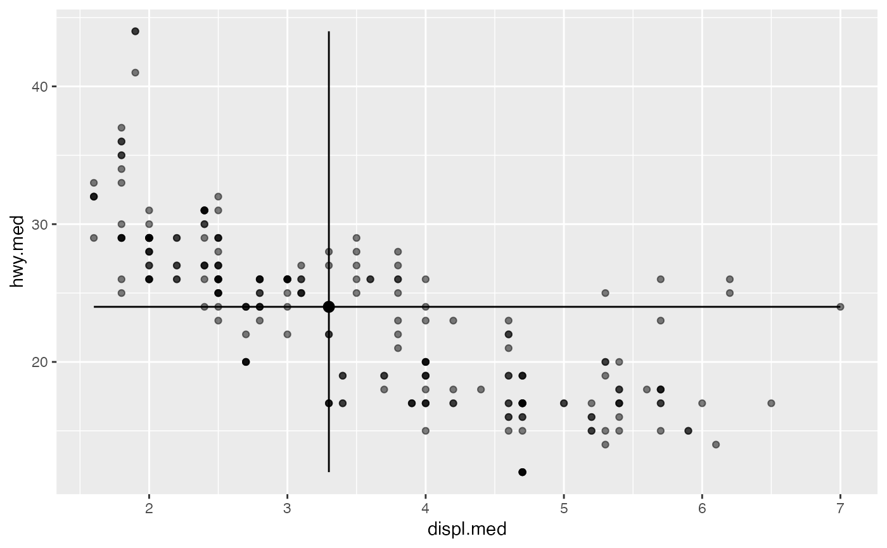
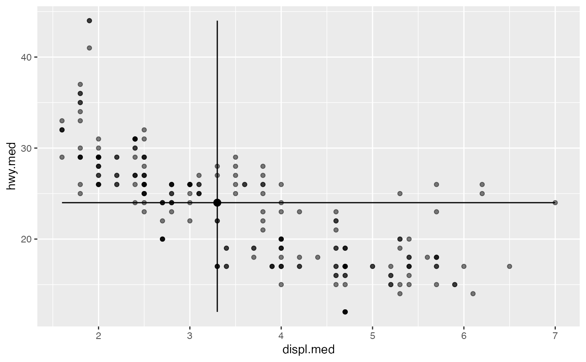

Intervals depicting ranges, usually about center points
Source:R/geom-intervals.r
geom_lineranges.Rdgeom_lineranges() renders horizontal and vertical intervals
for a specified subject or variable; geom_pointranges() additionally
renders a point at their crosshairs.
Usage
geom_lineranges(
mapping = NULL,
data = NULL,
stat = "center",
position = "identity",
...,
na.rm = FALSE,
show.legend = NA,
inherit.aes = TRUE
)
geom_pointranges(
mapping = NULL,
data = NULL,
stat = "center",
position = "identity",
...,
na.rm = FALSE,
show.legend = NA,
inherit.aes = TRUE
)Arguments
- mapping
Set of aesthetic mappings created by
aes(). If specified andinherit.aes = TRUE(the default), it is combined with the default mapping at the top level of the plot. You must supplymappingif there is no plot mapping.- data
The data to be displayed in this layer. There are three options:
If
NULL, the default, the data is inherited from the plot data as specified in the call toggplot().A
data.frame, or other object, will override the plot data. All objects will be fortified to produce a data frame. Seefortify()for which variables will be created.A
functionwill be called with a single argument, the plot data. The return value must be adata.frame, and will be used as the layer data. Afunctioncan be created from aformula(e.g.~ head(.x, 10)).- stat
The statistical transformation to use on the data for this layer. When using a
geom_*()function to construct a layer, thestatargument can be used the override the default coupling between geoms and stats. Thestatargument accepts the following:A
Statggproto subclass, for exampleStatCount.A string naming the stat. To give the stat as a string, strip the function name of the
stat_prefix. For example, to usestat_count(), give the stat as"count".For more information and other ways to specify the stat, see the layer stat documentation.
- position
A position adjustment to use on the data for this layer. This can be used in various ways, including to prevent overplotting and improving the display. The
positionargument accepts the following:The result of calling a position function, such as
position_jitter(). This method allows for passing extra arguments to the position.A string naming the position adjustment. To give the position as a string, strip the function name of the
position_prefix. For example, to useposition_jitter(), give the position as"jitter".For more information and other ways to specify the position, see the layer position documentation.
- ...
Additional arguments passed to
ggplot2::layer().- na.rm
Passed to
ggplot2::layer().- show.legend
logical. Should this layer be included in the legends?
NA, the default, includes if any aesthetics are mapped.FALSEnever includes, andTRUEalways includes. It can also be a named logical vector to finely select the aesthetics to display.- inherit.aes
If
FALSE, overrides the default aesthetics, rather than combining with them. This is most useful for helper functions that define both data and aesthetics and shouldn't inherit behaviour from the default plot specification, e.g.borders().
Value
A ggproto layer.
Details
The geom_*ranges() layers are shortcuts for equivalently-specified
pairs of horizontal and vertical
ggplot2::geom_*range() layers. Rather than
ggplot2::stat_identity(), they default to stat_center(), so that in
practice the summary values do not need to be manually passed.
Biplot layers
ggbiplot() uses ggplot2::fortify() internally to produce a single data
frame with a .matrix column distinguishing the subjects ("rows") and
variables ("cols"). The stat layers stat_rows() and stat_cols() simply
filter the data frame to one of these two.
The geom layers geom_rows_*() and geom_cols_*() call the corresponding
stat in order to render plot elements for the corresponding factor matrix.
geom_dims_*() selects a default matrix based on common practice, e.g.
points for rows and arrows for columns.
Aesthetics
geom_lineranges() and geom_pointranges() understand the following
aesthetics (required aesthetics are in bold):
xxminxmaxyyminymax`alphacolourlinewidthlinetypesizegroup
See also
Other geom layers:
geom_axis(),
geom_bagplot(),
geom_interpolation(),
geom_isoline(),
geom_origin(),
geom_rule(),
geom_text_radiate(),
geom_vector()
Examples
ggplot(mpg, aes(x = displ, y = hwy, color = drv)) +
geom_point(alpha = .25) +
geom_lineranges()
#> No center function supplied; defaulting to `mean_se()`
#> This message is displayed once per session.
 ggplot(mpg, aes(x = displ, y = hwy, color = drv)) +
geom_point(alpha = .25) +
geom_pointranges(fun.data = mean_sdl, shape = "circle open")
ggplot(mpg, aes(x = displ, y = hwy, color = drv)) +
geom_point(alpha = .25) +
geom_pointranges(fun.data = mean_sdl, shape = "circle open")
 mpg |>
aggregate(
x = cbind(displ, hwy) ~ 0,
FUN = \(z) c(min = min(z), med = median(z), max = max(z))
) |>
do.call(what = data.frame) |>
ggplot(aes(displ.med, hwy.med)) +
geom_pointranges(
stat = "identity",
aes(xmin = displ.min, xmax = displ.max, ymin = hwy.min, ymax = hwy.max)
) +
geom_point(data = mpg, aes(displ, hwy), alpha = .5)

mpg |>
aggregate(
x = cbind(displ, hwy) ~ 0,
FUN = \(z) c(min = min(z), med = median(z), max = max(z))
) |>
do.call(what = data.frame) |>
ggplot(aes(displ.med, hwy.med)) +
geom_pointranges(
stat = "identity",
aes(xmin = displ.min, xmax = displ.max, ymin = hwy.min, ymax = hwy.max)
) +
geom_point(data = mpg, aes(displ, hwy), alpha = .5)
